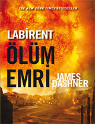
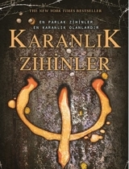
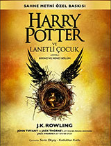

www.kitaphakkında.com.tr
Kitaplar hakkında bir çok şey bizde ❤
Macera Kitap
Labirent - Ölüm Emri Kitabı
|  |
| Kitabın Yazarı:James Dashner |
| Kitap Türü:Yabancı Romanlar |
| Yayınevi:Pegasus Yayınları |
| Yayınlandığı Yıl:2015 (17-03-2015) |
| Sayfa Sayısı:400 |
| Kitap Puanı:9.2/10 |
|
|
Arka Kapak Bilgisi
Ani bir patlamayla sonun geldiğini sandılar. İsyan kurulmadan, Kayran inşa edilmeden ve Thomas, Labirent'e girmeden önce bir güneş patlaması dünyayı vurmuş, insan nüfusunun çoğunu öldürmüştür. Ancak en kötü günler henüz yaşanmadı. Mark ve Trina o yıkımdan sağ çıkmayı başarmıştır. Ama şimdi bir virüs hızla yayılmaktadır; insanları cinnete ve cinayete sürükleyen bir virüs.
Tedavi yok. Kaçış yok. İki genç, hayatta kalmayı başarabilirlerse insanlığın geri kalanını kurtarmanın bir yolunu bulabileceklerine de ikna olurlar. Çünkü bu yeni, yıkılmış dünyada her yaşamın bir bedeli vardır. Ve bazıları için ölünüz, dirinizden daha değerlidir. Son aslında sadece bir başlangıçtır.
"Geçmişi ve geleceği bugünle harmanlayan Ölüm Emri hem distopya türünün klasik eserlerini anımsatıyor hem de Dashner'ın çok satan Labirent üçlemesinin temelini sağlamlaştırıyor."
Labirent - Ölüm Emri Kitabı Özeti
James Dashner’in dünyada çok satan Labirent üçlemesinin sona ermesi hayranlarında biraz hayalkırıklığı yaratmıştı fakat ünlü yazar farklı bir izledi ve serinin dördüncü kitabı olan Labirent Ölüm Emri ile okurlarına hikayenin temelini sunuyor.
Labirent Ölüm Emri romanı bu kez geçmişe gidiyor ve her şeyin nasıl başladığını okurlarına sunuyor. Güneş patlaması dünyayı kasıp kavurmuş ve hızla yayılan bir virüs ortaya çıkmıştır. Mark ve Trina ilk yıkımdan sağ çıkmayı başarmış ve insanların sonunu getirmek üzere olan virüsü durdurmanın yollarını aramaya başlamışlardır. Bir taraftan hayatta kalmak için savaşırken diğer taraftan insanoğlunun hayatını kurtarabilmek için hayat almak zorunda kalacakları serüven bu şekilde başlayacaktır.
Karanlık Zihinler Kitabı
|  |
| Kitabın Yazarı:Alexandra Bracken |
| Kitap Türü:Yabancı Romanlar |
| Yayınevi:Parodi Yayınları |
| Yayınlandığı Yıl:2014 (12-12-2014) |
| Sayfa Sayısı:576 |
| Kitap Puanı:9.1/10 |
|
|
Arka Kapak Bilgisi
Adım Ruby.
Hepinizden farklıyım.
Aklınızın derinliklerinde gezinebilir,
anılarınızı hiç yaşamamışsınız gibi silebilirim.
Henüz on yaşındayken Thurmond'daki bu rehabilitasyon kampına gönderildim. Hem de kendi ailem tarafından...
Burada her adımımız izleniyor, nefes alış verişlerimiz bile.
Yalnız değilim.
Maviler... Yeşiller... Turuncular...
Sarılar ve Kırmızılar...
Karanlık Zihinler...
Ve yaşamak için saklanmak zorunda kalanlar,
Ve kaçanlar...
"Bu kitap, distopya okuyucuları için bir baş ucu kitabı olacaktır."
"Bir solukta okuyacağınız KARANLIK ZİHİNLER'in sürükleyici anlatımı, kalbinizi durduracak bir finalle son buluyor. Öyle ki bu mükemmel üçlemenin ikinci kitabının çıkmasını her şeyden çok isteyeceksiniz."
Karanlık Zihinler Kitabı Özeti
Karanlık zihinler, 10-18 yaşlarında zihinsel ve fiziksel güçleri olan çocuklar üzerine kuruyor hikayesini. Bu çocuklar önce hükümet tarafından yayılan salgınla ortaya çıkarılıyor. Daha sonra kamplara toplanıyor. Kamplarda çocuklar güçlerine göre beş renkte sınıflandırılıyor: Yeşil, mavi, sarı, turuncu ve kırmızı.
Yeşiller çok zeki, bulmacalarda başarılı kampta da özelliklerine uygun eğitimler alıyorlar. Maviler telekineziye sahip, sarılar elektriği, kırmızılar ateşi, turuncular zihin kontrol edebiliyor. Tabi bu özel çocuklar için çatışan gruplar var. Hükümet çocukları kamplarda toplamış durumda ve kırmızı ve turuncuları imha ederek düzeni sağlamaya çalışıyor. Çocuk birliği adında da birtakım insanlar da kamplardan çocukları kurtarmaya çalışıyor ancak onların da bir amacı var.
Baş karakterimiz Ruby turuncu olmasına rağmen onu kontrol eden doktorun zihnini karıştırarak yeşillerin arasına girmeyi başarmış. Ancak salgınla ayırt edilen çocukları tekrar ayrıştırmak için 'beyaz gürültü' adıyla hoparlörden sinyal veriyorlar. Beyaz gürültü sadece çocuklar üzerinde etkili, gerçekten acı veriyor ve yetenekleri üzerinde baskılayıcı bir etkisi var.
Asıl hikaye çocuk birliğinin Ruby'yi kamptan kaçırmasıyla başlıyor. Dr. Cate araba değiştirirken erkek arkadaşı ile buluşuyor ve Ruby adamın eline dokunduğunda özel çocuklardan birini öldürdüğü anısını görüyor. Ruby ile kaçırılan diğer çocuğa kıyafetlerini değiştirmeleri için zaman verildiğinde Ruby kaçmaya karar veriyor tam o sırada küçük bir kızı görüyor ve peşine düşüyor. Ufak çaplı bir kovalamacadan sonra Zu bir arabaya biniyor. Ruby'yide içeri çekiyor. Cate' in sevgilisi de onları arıyor. Gürültüden Liam ve Chubs arabaya biniyor. Ve macera başlıyor.
Ruby önce sadece uzaklaşmak istese de ekibin hayallerine ortak oluyor. Ekibin son amacı da kulaktan kulağa yayılan zarar görmeyecekleri, özgürce yaşayabilecekleri bir yerin bilgisi. Kaçak çocuk özel olan çocuklar için mutlu ve barışçıl bir yuva vadediyor. Tabi peşlerinde birlik, pök ve yetişkinlerde olunca macera katlanıyor. Bu arayışları sonucunda Kaçak Çocuk'u buluyorlar. Ancak bir süre sonra buranında güvenli olmadığını anlıyorlar.
Karakterlere bakacak olursak; olaylar Ruby'nin anlatımıyla önümüzde şekilleniyor. Ruby sessiz, olaylara karışmayan bir çocuk. Güçlerini yeterli düzeyde kullanmayı yolda ve başkanın oğluyla öğreniyor. Eh tabi Kaçak Çocuk'un amacı sadece güçlerini nasıl kullanması gerektiğini göstermek değil. Liam, ekibin lideri. O bir mavi ve sevdiklerini kollayan biri. Chubs ise o tam bir yeşil. Ekibin beyni. Zu'ya ders çalıştırdığı bölüm favorim. Ve Zu, elektriğe hükmedebiliyor. Kampta sarılara yaptıkları kötü bir şeyden dolayı konuşmuyor. Ama merhameti sevgisi her davranışında gizli.
Entrikalar, gizemler, heyecanın soluk soluğa olacağı bir yol. Onlar yolda birbirlerine güvenmeyi, sevmeyi öğreniyorlar. Yol onlar için kendilerini keşfetme süreci birazda. Her birinin sorumlulukları var. Birbirlerini geride bırakmıyorlar asla ve her kitapta olduğu gibi vazgeçilmezimiz aşk. Ruby ve Liam'ın birbirlerine olan sevgisi, Ruby'nin gücünden dolayı gösterdiği fedakarlıklar... Tam bir best-seller kısaca.
Karanlık zihinler, bu kitap serisinin ilk kitabı. Kitap gayet sade bir dille yazılmış. Hitap ettiği kesim 12-20 yaş diyebilirim. Anlatılanları rahatça zihnimizde canlandırabiliyoruz. Bu dünyayı sağlam bir çerçeveye oturtmak adına diğer kitaplarda bilgi verildiğini düşünüyorum. Metroda, otobüste, kafanızı boşaltmak istediğiniz zaman kaçabileceğiniz bir dünya.
Yazarın yarattığı distopya beni çok tatmin edemedi ama çok beğenenler var ve üzerine filminin de olduğunu düşünürsek kitlesini tatmin eden bir kitap. Ancak kitap ve film ana hatlarda örtüşüyor. Ve film oradan oraya gidince arada gerçekten kitapta işlenmiş güzel yerleri atladığını fark ediyorsunuz o yüzden önce kitap sonra film :)
Harry Potter ve Lanetli Çocuk Kitabı
|  |
| Kitabın Yazarı:J.K. Rowling |
| Kitap Türü:Yabancı Romanlar |
| Yayınevi:Yapı Kredi Yayınları |
| Yayınlandığı Yıl:2016 (04-11-2016) |
| Sayfa Sayısı:360 |
| Kitap Puanı:7.8/10 |
|
|
Arka Kapak Bilgisi
Sekizinci Hikâye. On Dokuz Yıl Sonra...
Harry ait olduğu yerde durmayı reddeden bir geçmişle boğuşurken, en küçük oğlu Albus da istemediği bir aile mirasının yükünü omuzlarında taşımakta zorlanır. Geçmişle gelecek uğursuzca iç içe geçerken hem baba hem oğul tedirgin edici bir gerçeği, bazen karanlığın beklenmedik yerlerden geldiğini öğrenir.
"Harry Potter ve Lanetli Çocuk", J.K. Rowling, John Tiffany ve Jack Thorne'a ait yeni bir özgün hikâyeden yola çıkarak Jack Thorne'un yazdığı yeni bir oyun. Bu oyun sadece sekizinci Harry Potter hikâyesi değil, aynı zamanda tescilli olarak sahneye koyulan ilk Harry Potter hikâyesi. 30 Temmuz 2016'da Londra West End'de gerçekleşen prömiyerin hemen ardından Sahne Metni Özel Baskısı, dünyanın dört bir yanındaki okuyucuları Harry Potter, arkadaşları ve ailesinin devam eden yolculuğuyla buluşturuyor.
Harry Potter ve Lanetli Çocuk Kitabı Özeti
Harry Potter ve Lanetli Çocuk kitabı seriye 19 yıl sonra bir tiyatro oyunuyla devam ediyor. Sahne metni tam baskısı Harry Potter ve Lanetli Çocuk, üç yazarın katkılarıyla hazırlanmış ve sergilenmiş bir oyun. J.K ROWLİNG, John Tiffany ve Jack Thorne tarafından kaleme alınmış. Harry Potter ve Lanetli Çocuk, tiyatro oyunu olarak çok konuşulacak uzun yıllar kendisinden söz ettirecek bir eser ortaya çıkarmış durumda. Dört perdeden oluşan eserin sahne arkasında yirmi kişiden fazla bir ekip bulunmakta. Sonia Friedman , Colin Callender ve Harry Potter Tiyatro yapım şirketleri tarafından hazırlanan oyun arkasında ki fikir gücüyle de beklentileri artırıyor. Tiyatro salonu girişinde bulunan ‘’Lanetli Çocuk’’(Kapak Fotoğrafında ki görselin büyük bir tasarımı bulunuyor.) dekoru çok fazla insanı şimdiden heyecanlandırmış durumda.
Harry Potter’ın yıllar sonra okula çocuklarını göndermeleriyle kitap başlıyor. Harry ve Ginny evlenmiştir. Çocukları olmuştur. Kitabın merkezinde Harry’nin büyük geçmişinin altında ezilen Albus’un seçmen şapkadan sonra yaşadığı çatışmalar konu edilmiş. Heyecanın hiç düşmediği kitapta Albus sürekli babasının isminin gölgesinde ezilirken ismi karanlığın en koyusu(Karanlık Lord – Voldemort-) olan Harry Potter’ın azılı düşmanıyla anılan Scorpius; Albus ile Harry Potter ve arkadaşlarının tanıştığı noktada yolu keşisir.(Arkadaşları Ron ve Hermonie kastedilmiştir.) Her şeyin başlangıcı olan bu tren odası uzun süren maceralar ve heyecanın başlangıcıdır.
Albus bu tren odasında Scorpius’tan başka Delphi adında bir kişiyle de tanışmıştır. Acaba bu kader midir? Albus ailesinin soyadı altında ezilirken babasıyla sürekli çatışmaktadır. Scorpius’ta her ortamda kendisinden dedikodularının önce gitmesiyle adeta ismiyle önyargılarını taşımaktadır. Delphi ise büyük bir gizem ile arkadaşlığını sürdürmektedir. Albus yaşadığı çatışmalardan dolayı ailesini seçememe duygusuyla kendisini yiyip bitirmektedir. Her gittiği ortamda kendisi Harry Potter ile sürekli kıyaslanmakta Albus’un ismi yerine Potter aile üyeliği ağır basmaktadır. Potter şöhreti altında ezilen Albus bu ailenin yüz karası olarak gösterilmektedir.
Sihir bakanlığı bünyesinde bir takım kişilerin zaman döndürücü adlı bir cihaz ile karanlık işleri planladıkları bilgisi bulunmaktadır. Bu esnada Harry Potter Üç Büyücü Turnuvasında ölen Cedric(Lanetli Çocuk) için büyük acı çekmektedir. Albus babasının bu hatasını düzeltmek için zamanda geriye dönüp Cedric’i kurtarmayı deneyecektir.
Harry Potter Albus’un bu fikri ve tehlikeli yaramazlıklarından dolayı Albus’u Scorpius’tan uzaklaşmasını ister. Bunu yapması için çeşitli büyülerle onu tehdit etmektedir. Harry Potter bu tutumu onu hiç alışık olmadığı aile konusunda yaptığı hataların başında gelir. Harry Potter ve Albus’un araları açılır. Albus Harry Potter’ın hatasını düzeltmek için zaman döndürücüyü bulup yolculuğa çıkarlar. Zaman kavramı içerisinde yaptıkları her söz ve hareket onları bir sonraki çıkmaz sürece girmelerine neden olur.
Harry Potter ve Lanetli Çocuk kitabı başarılı bir çatışma arka planında arkadaşlığın ve aile kavramının paylaşıldığı heyecanlı ve keyifli bir metin olmuş. Zaman kavramı içerisinde çocukları büyüklerin görüntüleri içine girmesi empati kavramına bilimkurgu düzeyinde bir katkı sağlamış. Harry’nin aile bireyi olarak yaptığı hatalar ve özürler süreçleri iyi bir şekilde aktarırken okurda devamını beklemesini sağlıyor. Harry Potter serisinden zaman ve karakter zenginliği olarak başka bir seriye konu olabilecek güçte olan bu eser J.K Rowling için de ikinci bir olgunluk dönemi mi? Bu soruların cevaplarını zamanla göreceğiz. Kitap içerisinde ki en büyük mesajlardan bir tanesiyle başka kitaplarda buluşmaya devam edelim. Zaman geçip giderken, aile ve arkadaşlıkların kıymetini bilelim. Çocuklarında en büyük hakkı çocukluklarını yaşamaktır. Harry Potter’ın deyimiyle çocukları korumak isterken:
‘’Sevgi beni körleştirmişti.’’ Demek zorunda kalmayın.